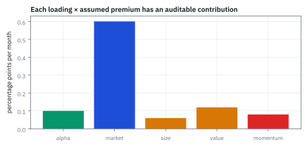
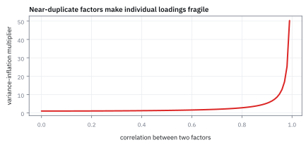
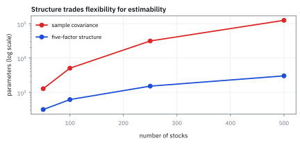

15.3 Multi-Factor Models
ใช้แรงร่วมไม่กี่ตัวอธิบายว่าทำไมหุ้นขยับไปด้วยกัน แล้วใช้มันทำสองงาน: แยกฝีมือของผู้จัดการกองทุนออกจากแรงที่ใครก็ซื้อได้ และสร้าง covariance ของหุ้นหลายร้อยตัวจากตัวเลขไม่กี่พันตัว
ทีมลงทุนทีมหนึ่งต้องตัดสินใจว่าจะแบ่งเงินลงหุ้น 500 ตัวอย่างไร เครื่องมือที่ใช้คือ Markowitz: วิธีเลือกน้ำหนักของหุ้นแต่ละตัวให้พอร์ตได้ผลตอบแทนคาดหวังสูงสุดที่ความเสี่ยงระดับหนึ่ง โปรแกรมที่คำนวณน้ำหนักนี้เรียกว่า optimizer
optimizer ต้องรู้ว่าหุ้นแต่ละคู่ขยับไปด้วยกันมากแค่ไหน ข้อมูลนี้อยู่ใน covariance matrix: ตารางขนาด $500\times500$ ที่ช่อง $(i,j)$ คือ covariance ของผลตอบแทนหุ้น $i$ กับหุ้น $j$ ทีมต้องประมาณตารางนี้จากข้อมูลย้อนหลัง
ของที่มี:
- จำนวนหุ้น $N=500$ ตัว
- ผลตอบแทนรายวันย้อนหลัง $T=250$ วัน ตัวเลข 250 มาจากกฎ Basel (กฎกลางที่ธนาคารทั่วโลกใช้วัดความเสี่ยง) ซึ่งให้ใช้ข้อมูลย้อนหลังอย่างน้อยหนึ่งปี และนับหนึ่งปีเป็น 250 วันทำการ ส่วนปีซื้อขายจริงของตลาดหุ้นสหรัฐฯ มีราว 252 วัน
- ข้อมูลทั้งหมดมี $N\times T=500\times250=125{,}000$ ตัวเลข
covariance matrix สมมาตร ช่อง $(i,j)$ กับช่อง $(j,i)$ เป็นตัวเลขเดียวกัน ตัวเลขที่ต้องประมาณจึงมีแค่แนวทแยงกับครึ่งบนของตาราง:
เทียบข้อมูลกับตัวเลขที่ต้องประมาณ ได้ $125{,}000/125{,}250\approx0.998$ จุดต่อตัวเลข นักวิเคราะห์คนหนึ่งบอกว่า “ข้อมูลเกือบหนึ่งจุดต่อหนึ่งตัวเลข ถือว่าพอ” ใช้ได้ไหม?
ลองตอบก่อนเปิดเฉลย
ใช้ไม่ได้ และปัญหาหนักกว่าแค่ข้อมูลน้อย หน้านี้จะพิสูจน์ว่า covariance matrix ที่คำนวณจากข้อมูล $T$ วันมี rank ไม่เกิน $T-1=250-1=249$ แต่ตารางมีขนาด $500\times500$ จึงเหลือทิศทางการจัดพอร์ตอย่างน้อย $500-249=251$ ทิศที่ข้อมูลบอกว่าความเสี่ยงเป็นศูนย์ ซึ่งไม่จริง optimizer ไม่รู้ว่ามันไม่จริง จึงทุ่มเงินลงทิศพวกนั้นทันที
ทางแก้ที่หน้านี้สอนคือ multi-factor model: สมมติว่าหุ้นขยับไปด้วยกันผ่านแรงร่วมไม่กี่ตัวเท่านั้น model ที่มีแรงร่วมห้าตัวต้องประมาณตัวเลขแค่ 3,015 ตัว (หน้านี้จะนับให้ดูทีละขั้น) ข้อมูลต่อตัวเลขจึงเพิ่มเป็น $125{,}000/3{,}015\approx41.5$ จุด และ covariance ที่ได้มี inverse เสมอ ราคาที่ต้องจ่ายคือต้องเชื่อว่าหุ้นขยับร่วมกันผ่านแรงร่วมพวกนั้นเท่านั้น
ภาพรวมก่อนลงสูตร
เริ่มจากสิ่งที่เห็นในตลาด หุ้นไม่ได้ขยับอิสระจากกัน วันที่ทั้งตลาดลง หุ้นส่วนใหญ่ก็ลงด้วย CAPM อธิบายเรื่องนี้ด้วยแรงผลักตัวเดียว คือผลตอบแทนของทั้งตลาด แต่ข้อมูลจริงมีกลุ่มหุ้นที่ขยับด้วยกันมากกว่าที่ตลาดตัวเดียวอธิบายได้:
- ขนาด (size): หุ้นของบริษัทเล็กมักขึ้นลงพร้อมหุ้นของบริษัทเล็กด้วยกัน
- value: หุ้นที่ราคาถูกเมื่อเทียบกับมูลค่าทางบัญชีของบริษัท (ทรัพย์สินหักหนี้ตามงบการเงิน) มักขยับพร้อมกัน
- momentum: หุ้นที่ราคาขึ้นแรงในช่วงหลายเดือนที่ผ่านมามักขยับไปด้วยกัน
multi-factor model (model หลายปัจจัย) ยอมให้มีแรงร่วมหลายตัว แรงแต่ละตัวเรียกว่า factor และวัดเป็นผลตอบแทนของพอร์ตที่สร้างตามกติกาตายตัว เช่น factor ขนาดคือผลตอบแทนของการถือหุ้นเล็กและขายหุ้นใหญ่ในจำนวนเงินเท่ากัน หุ้นแต่ละตัวรับแรงของแต่ละ factor มากน้อยต่างกัน ตัวเลขที่บอกว่ารับมากแค่ไหนเรียกว่า loading ส่วนที่ factor อธิบายไม่ได้คือส่วนเฉพาะตัวของหุ้นนั้น ซึ่งไม่เกี่ยวกับหุ้นอื่นเลย
รูปด้านล่างวาดโครงของ model วงกลมสี่วงคือ factor สี่ตัว สี่เหลี่ยมแปดอันคือหุ้นแปดตัว เส้นที่ต่อวงกลมกับสี่เหลี่ยมคือ loading ลูกศรเทาจากด้านล่างคือส่วนเฉพาะตัว กติกาของ model มีข้อเดียว: หุ้นสองตัวจะขยับด้วยกันได้ก็ต่อเมื่อต่อสายเข้าวงกลมวงเดียวกัน
โครงนี้ใช้ทำสองงาน งานแรกคือแยกผลตอบแทนของกองทุนว่ามาจาก factor ไหนเท่าไร งานนี้เรียกว่า attribution และเปลี่ยนตัวเลข alpha ได้มาก (alpha คือผลตอบแทนส่วนที่เชื่อว่ามาจากฝีมือของผู้จัดการ ไม่ได้มาจากแรงร่วม) งานที่สองใหญ่กว่า คือสร้าง covariance matrix ของหุ้นจำนวนมากจากตัวเลขไม่กี่ตัว ซึ่งแก้โจทย์หุ้น 500 ตัวตอนต้นหน้าได้
ลำดับของหน้านี้: นิยาม model แล้วแยกผลตอบแทนของกองทุนหนึ่งด้วยมือ ดูว่าทำไม loading แยกกันไม่ออกเมื่อ factor สองตัวคล้ายกัน พิสูจน์ว่าทำไมผลตอบแทนคาดหวังต้องเป็นเส้นตรงของ loading (ผลนี้ชื่อ APT) จากนั้นสร้าง covariance จาก model และนับตัวเลขที่ต้องประมาณ ดูว่า covariance ที่คำนวณตรงจากข้อมูลพังอย่างไรเมื่อหุ้นมากกว่าวัน แล้วซ่อมด้วยโครงสร้างของ model และด้วยวิธีที่เรียกว่า shrinkage
รูป — แรงร่วมไม่กี่ตัวผลักหุ้นหลายตัว
ศัพท์ที่ใช้ในหัวข้อนี้
- Factor
- แรงร่วมที่ทำให้หุ้นหลายตัวขยับพร้อมกัน วัดเป็นผลตอบแทนของพอร์ตที่สร้างตามกติกาตายตัว เช่น ถือหุ้นเล็กและขายหุ้นใหญ่ในจำนวนเงินเท่ากัน
- Factor loading
- ตัวเลขที่บอกว่าหุ้นหรือกองทุนรับแรงของ factor หนึ่งมากแค่ไหน คือ slope ของ regression: ถ้า factor ขยับ 1% ผลตอบแทนของหุ้นขยับตาม $b$% โดยถือ factor อื่นคงที่
- Exposure
- loading ของพอร์ตทั้งพอร์ต คือ loading ของหุ้นแต่ละตัวถ่วงด้วยน้ำหนักในพอร์ต ใช้บอกว่าพอร์ตรับแรงของ factor ไหนมากแค่ไหน
- Excess return
- ผลตอบแทนส่วนเกิน คือผลตอบแทนลบด้วยดอกเบี้ยของเงินฝากที่ไม่มีความเสี่ยง
- Alpha
- ผลตอบแทนคาดหวังส่วนที่เหลือหลังหักส่วนที่ factor อธิบายได้ ใช้วัดฝีมือของผู้จัดการกองทุน
- Factor premium
- ผลตอบแทนคาดหวังของ factor หนึ่ง $\mathbb E[f_k]$ คือสิ่งที่ตลาดจ่ายให้คนที่ยอมรับแรงของ factor นั้น
- Multi-factor model
- สมการที่เขียนผลตอบแทนส่วนเกินของหุ้นเป็นผลรวมของ loading คูณ factor หลายตัว บวกส่วนเฉพาะตัว ประมาณด้วย regression หลายตัวแปร
- Multicollinearity
- สภาพที่ factor สองตัวขยับคล้ายกันมาก ผลรวมของมันยังอธิบายข้อมูลได้ดี แต่ regression แบ่งไม่ออกว่า loading ตัวไหนเท่าไร SE (ความคลาดเคลื่อนมาตรฐานของค่าประมาณ) จึงพองขึ้นหลายเท่า
- Arbitrage
- กำไรฟรี คือกลยุทธ์ที่ไม่ใช้เงินตั้งต้น ไม่มีความเสี่ยง แต่ได้ผลตอบแทนเป็นบวก
- Arbitrage Pricing Theory (APT)
- ทฤษฎีที่บอกว่า ถ้าตลาดไม่มีกำไรฟรีให้เก็บ ผลตอบแทนคาดหวังต้องเป็นเส้นตรงของ loading ใช้แทน CAPM ได้โดยไม่ต้องสมมติว่านักลงทุนทุกคนเลือกพอร์ตด้วย mean–variance แบบ Markowitz
- Idiosyncratic variance
- variance ของส่วนเฉพาะตัวของหุ้นแต่ละตัว คือส่วนที่ factor อธิบายไม่ได้ เก็บบนแนวทแยงของ matrix $D$ ค่าที่เป็นบวกเหล่านี้คือสิ่งที่รับประกันว่า covariance ของ model มี inverse
- Sample covariance
- covariance matrix ที่คำนวณตรงจากข้อมูลย้อนหลัง โดยประมาณทุกช่องแยกกัน
- Shrinkage estimator
- การผสม sample covariance กับ matrix ที่มีโครงสร้างง่าย ด้วยน้ำหนัก $\delta$ ยอมให้ค่าประมาณเอนเอียงเล็กน้อย เพื่อแลกกับความคลาดเคลื่อนที่ลดลงมาก
สัญลักษณ์และหน่วย
| สัญลักษณ์ | ความหมาย | หน่วย |
|---|---|---|
| $r_{i,t}$ | ผลตอบแทนส่วนเกินของหุ้นหรือกองทุน $i$ ในช่วง $t$ | % ต่อช่วง |
| $f_{k,t},\ \tilde f_k$ | ผลตอบแทนของ factor $k$ และส่วนที่เบี่ยงจากค่าเฉลี่ย $\tilde f_k=f_k-\mathbb E[f_k]$ | % ต่อช่วง |
| $b_{ik},\ a_i$ | loading ของ $i$ ต่อ factor $k$ และ intercept หลังหักทุก factor | ไม่มีหน่วย และ % ต่อช่วง |
| $u_{i,t}$ | ส่วนเฉพาะตัวที่ factor อธิบายไม่ได้ | % ต่อช่วง |
| $N,\ K,\ T$ | จำนวนหุ้น จำนวน factor และจำนวนวันของข้อมูล | นับ |
| $B,\ \Sigma_f,\ D$ | matrix $N\times K$ ของ loading, covariance ของ factor และ diagonal matrix ของ idiosyncratic variance | ไม่มีหน่วย และ %² |
| $w,\ \mathbf b$ | น้ำหนักของพอร์ต และ exposure ของพอร์ต $B^{\mathsf T}w$ | ไม่มีหน่วย |
| $\Sigma,\ S$ | covariance ที่ model สร้าง และ sample covariance จากข้อมูล | %² |
| $\lambda_k,\ \delta$ | ผลตอบแทนคาดหวังต่อ loading หนึ่งหน่วย และน้ำหนัก shrinkage | % ต่อช่วง และไม่มีหน่วย |
ขั้นที่ 1 — นิยาม model หลายปัจจัย และผลตอบแทนคาดหวังของมัน
ก่อนจะใช้ model ทำงานใด ต้องเขียนมันเป็นสมการก่อน และต้องรู้ว่ามันบอกอะไรเรื่องผลตอบแทนคาดหวัง เพราะผลตอบแทนคาดหวังคือตัวเลขที่ใช้วัดฝีมือกองทุนในขั้นถัดไป สัญลักษณ์ที่ใช้:
- $r_{i,t}$ คือผลตอบแทนส่วนเกินของหุ้นหรือกองทุน $i$ ในช่วง $t$ (ผลตอบแทนลบดอกเบี้ยเงินฝากที่ไม่มีความเสี่ยง)
- $f_{k,t}$ คือผลตอบแทนของ factor ตัวที่ $k$ ในช่วงเดียวกัน มีทั้งหมด $K$ ตัว
- $b_{ik}$ คือ loading ของ $i$ ต่อ factor $k$ และ $a_i$ คือ intercept ซึ่งก็คือ alpha
- $u_{i,t}$ คือส่วนเฉพาะตัวที่ factor อธิบายไม่ได้
สมการแรกคือ CAPM ที่เปลี่ยนจากตลาดตัวเดียวเป็น factor $K$ ตัว ค่า $a_i$ กับ $b_{ik}$ หาด้วย regression หลายตัวแปร คือแก้สมการ $X^{\mathsf T}X\hat\beta=X^{\mathsf T}\mathbf y$ ของ OLS โดย matrix ข้อมูล $X$ มี $K+1$ คอลัมน์ คือคอลัมน์ของเลข 1 สำหรับ $a_i$ กับคอลัมน์ละหนึ่ง factor จากนั้นหาค่าคาดหวังทั้งสองข้าง เพื่อดูว่าผลตอบแทนคาดหวังมาจากไหนบ้าง
ผลตอบแทนคาดหวังแยกได้เป็นสองแหล่งที่ต่างกันมาก แหล่งแรกคือ $\sum_k b_{ik}\mathbb E[f_k]$ ซึ่งได้มาเพราะยอมรับความเสี่ยงของ factor ส่วนนี้ใครก็ซื้อได้ แหล่งที่สองคือ $a_i$ ที่เหลือหลังหักทุก factor ส่วนนี้คือตัวเลขที่ใช้วัดฝีมือ
ทำไมหาค่าคาดหวังแล้วได้แบบนี้ เพราะค่าคาดหวังของผลบวกคือผลบวกของค่าคาดหวัง (expected value เป็นเส้นตรง) และ $b_{ik}$ เป็นค่าคงที่ จึงดึงออกมานอก $\mathbb E$ ได้ ส่วน $u_{i,t}$ มีค่าเฉลี่ยศูนย์ เพราะ regression ที่มี intercept ให้ $a_i$ ดูดค่าเฉลี่ยของส่วนที่เหลือไปหมดแล้ว เหตุผลเดียวกับใน CAPM
สิ่งที่สูตรไม่ได้บอกคือ รายชื่อ factor เป็นการตัดสินใจของเรา ไม่ใช่ข้อเท็จจริง การเพิ่ม factor ทำให้ SSE (ผลรวมกำลังสองของส่วนที่เหลือ) ไม่มีทางเพิ่ม model จึงพอดีกับข้อมูลย้อนหลังขึ้นเสมอ ใครอยากได้ alpha ตามที่ต้องการก็แค่ลองเพิ่มคอลัมน์ไปเรื่อย ๆ จนเจอชุดที่ได้ผล จึงต้องตรึงรายชื่อ factor ก่อนดูผล
ขั้นที่ 2 — กองทุน A: alpha ของ CAPM 0.36% เหลือเท่าไรเมื่อหักสี่ปัจจัย
ผู้จัดการกองทุน A บอกลูกค้าว่ากองทุนชนะตลาด และคิดค่าธรรมเนียมจาก alpha ที่วัดด้วย CAPM ลูกค้าอยากรู้ว่า alpha นี้มาจากฝีมือจริง หรือมาจากการถือ factor อื่นที่ลูกค้าซื้อเองได้ในราคาถูก
โจทย์ให้อะไรมาบ้าง: ตัวเลขทั้งหมดเป็นตัวเลขสมมติ premium ในตารางคือผลตอบแทนคาดหวังต่อเดือนของ factor แต่ละตัว
| factor | loading ของกองทุน A ($b_k$) | premium ต่อเดือน ($\mathbb E[f_k]$) |
|---|---|---|
| market | 1.0 | 0.6% |
| size | 0.3 | 0.2% |
| value | 0.4 | 0.3% |
| momentum | 0.2 | 0.4% |
- alpha หลังหักสี่ factor $a=0.10\%$ ต่อเดือน
- เงินในกองทุน \$10 ล้าน
- size, value และ momentum ไม่มี covariance กับ market ข้อนี้ทำให้ beta ของ CAPM (slope ของผลตอบแทนกองทุนบนผลตอบแทนตลาด) เท่ากับ loading ต่อ market พอดี
ขั้นแรกคูณ loading กับ premium ของแต่ละ factor แล้วบวกกับ $a$ ตามสูตรของขั้นที่ 1 จะได้ผลตอบแทนคาดหวังของกองทุน จากนั้นวัดกองทุนเดียวกันด้วย CAPM ซึ่งเห็นแค่ตลาด แล้วดูว่า alpha ที่ CAPM เห็นต่างจาก $a$ เท่าไร
คำตอบ: กองทุนคาดได้ 0.96% ต่อเดือน CAPM เห็น alpha 0.36% แต่ alpha หลังหักสี่ factor มีแค่ 0.10% คิดเป็นเงินบนกองทุน \$10 ล้าน:
ส่วนต่าง $0.36-0.10=0.26$ จุด มาจาก size, value และ momentum พอดี: $0.06+0.12+0.08=0.26$ CAPM มองไม่เห็นสาม factor นี้ จึงนับส่วนนี้เป็นฝีมือ แต่ผลตอบแทนส่วนนี้ลูกค้าซื้อเองได้ถูก ๆ จากกองทุนที่ถือ factor ตามกติกาและเก็บค่าธรรมเนียมต่ำ ค่าธรรมเนียมที่คิดจาก “alpha” จึงควรคิดจาก 0.10% ไม่ใช่ 0.36%
ตรวจเองใน 10 วินาที: $0.60+0.06+0.12+0.08=0.86$ และ $0.86+0.10=0.96$ ส่วน $\beta_{\rm CAPM}=b_M$ ใช้ได้เพราะ $\operatorname{Cov}(r_A,f_M)=b_M\operatorname{Var}(f_M)+\sum_{k\ne M}b_k\operatorname{Cov}(f_k,f_M)$ และเราสมมติให้พจน์หลังเป็นศูนย์ ถ้าไม่เป็นศูนย์ slope ของ CAPM จะดูด exposure ต่อ factor อื่นเข้ามาด้วย และ alpha ของ CAPM จะเปลี่ยนไป
รูป — exposure ของสามกองทุนต่อสี่ factor
รูป — บัญชีส่วนร่วมของแต่ละ factor ในกองทุน A

ขั้นที่ 3 — factor ที่คล้ายกันทำให้ loading แยกกันไม่ออก
สมมติว่าทีมวิจัยเสนอ factor ใหม่ตัวหนึ่ง และมันขยับเกือบเหมือน value ทุกเดือน ถ้าใส่ทั้งสองตัวใน regression เดียวกัน regression จะรู้ได้อย่างไรว่าผลตอบแทนของกองทุนมาจากตัวไหน? วิธีวัดคือดู variance ของ loading ที่ประมาณได้ ถ้า variance ใหญ่ ค่าที่ได้ก็เชื่อไม่ได้
เพื่อให้คำนวณด้วยมือได้ สมมติว่า:
- factor ทั้งสองตัวถูกปรับให้มีค่าเฉลี่ยศูนย์และ variance หนึ่ง และมี correlation กัน $\rho$
- มีข้อมูล $n$ ช่วงเวลา
- ส่วนที่เหลือ $\varepsilon$ ของแต่ละช่วงเป็นอิสระกัน และมี variance $\sigma^2$ เท่ากันทุกช่วง
$X$ คือ matrix ข้อมูลที่มีสองคอลัมน์ คอลัมน์ละหนึ่ง factor $\hat\beta=(\hat b_1,\hat b_2)$ คือ loading ที่ประมาณได้ และ $\mathbf y$ คือผลตอบแทนของกองทุน
ข้อสรุปอยู่ที่ตัวคูณ $1/(1-\rho^2)$ ซึ่งเรียกว่า variance inflation factor (VIF) ถ้า factor สองตัวไม่เกี่ยวกันเลย ($\rho=0$) ตัวคูณเป็น 1 แต่พอ $\rho$ เข้าใกล้ 1 ตัวส่วน $1-\rho^2$ เข้าใกล้ศูนย์ variance ของ loading แต่ละตัวจึงระเบิด
ทำไม covariance ของ $\hat\beta$ เป็น $\sigma^2(X^{\mathsf T}X)^{-1}$ แทน $\mathbf y=X\beta+\varepsilon$ ลงในสูตรของ $\hat\beta$ จะได้ $\hat\beta=\beta+(X^{\mathsf T}X)^{-1}X^{\mathsf T}\varepsilon$ ส่วนที่สุ่มมีแค่ก้อนหลัง covariance ของก้อนนี้คือ $(X^{\mathsf T}X)^{-1}X^{\mathsf T}(\sigma^2I)X(X^{\mathsf T}X)^{-1}$ ตรงกลาง $X^{\mathsf T}X$ หักล้างกับ inverse ตัวหนึ่ง จึงเหลือ $\sigma^2(X^{\mathsf T}X)^{-1}$
ส่วน $X^{\mathsf T}X$ หน้าตาแบบนั้นเพราะแต่ละคอลัมน์มีผลรวมกำลังสองเท่ากับ $n$ (ค่าเฉลี่ยศูนย์ variance หนึ่ง) และผลคูณไขว้ของสองคอลัมน์รวมกันได้ $n\rho$ inverse ของ matrix $2\times2$ ได้จากการสลับแนวทแยง เปลี่ยนเครื่องหมายนอกแนวทแยง แล้วหารด้วย determinant
ตัวเลขจริง: ที่ $\rho=0.9$ variance พองขึ้น 5.26 เท่า SE ซึ่งเป็นรากที่สองของ variance จึงพอง $\sqrt{5.26}\approx2.29$ เท่า ที่ $\rho=0.99$ SE พอง $\sqrt{50.25}\approx7.09$ เท่า
แต่ผลรวม $\hat b_1+\hat b_2$ ยังแม่น เพราะ covariance นอกแนวทแยงของ $\hat\beta$ เป็นลบ เมื่อรวม variance สองตัวกับ covariance สองเท่า จะได้ $\tfrac{\sigma^2(2-2\rho)}{n(1-\rho^2)}=\tfrac{\sigma^2}{n}\cdot\tfrac{2}{1+\rho}$ ที่ $\rho=0.9$ ตัวคูณของ $\sigma^2/n$ คือ $2/1.9\approx1.05$ เทียบกับ 5.26 ของ loading แต่ละตัว model รวมยังทำนายได้ดี แค่แบ่งเครดิตให้แต่ละ factor ไม่ได้ ภาพในใจคือคนยืนบนเก้าอี้สองตัวที่ชิดกันมาก: รู้ว่าน้ำหนักตัวรวมเท่าไร แต่บอกไม่ได้ว่าเก้าอี้แต่ละตัวรับไปเท่าไร
รูป — variance ของ loading พองขึ้นเมื่อ factor คล้ายกัน

ขั้นที่ 4 — ทำไมผลตอบแทนคาดหวังต้องเป็นเส้นตรงของ loading (APT)
ขั้นที่ 1 บอกว่าผลตอบแทนคาดหวังมีส่วนที่มาจาก factor แต่ยังไม่ได้บอกว่าตลาดจ่ายเท่าไรต่อ loading หนึ่งหน่วย ขั้นนี้ใช้เหตุผลข้อเดียว คือ “ตลาดไม่ปล่อยให้มีกำไรฟรีอยู่นาน” แล้วได้คำตอบว่าผลตอบแทนคาดหวังต้องเป็นเส้นตรงของ loading ผลนี้ชื่อ Arbitrage Pricing Theory (APT) คำว่า arbitrage หมายถึงกลยุทธ์ที่ไม่ใช้เงินตั้งต้น ไม่มีความเสี่ยง แต่ได้กำไร
เริ่มจากตัวอย่างที่มี factor เดียว มีพอร์ตสามพอร์ตที่ถือหุ้นจำนวนมาก จนความเสี่ยงเฉพาะตัวหักล้างกันเกือบหมด (ตัวเลขสมมติ):
- P1 มี loading $b=0.5$ และผลตอบแทนคาดหวัง 0.55% ต่อเดือน
- P2 มี loading $b=1.5$ และผลตอบแทนคาดหวัง 1.25% ต่อเดือน
- P3 มี loading $b=1.0$ และผลตอบแทนคาดหวัง 1.00% ต่อเดือน
ผสม P1 กับ P2 อย่างละครึ่ง จะได้พอร์ตที่มี loading เท่ากับ P3:
P3 กับส่วนผสมรับแรงของ factor เท่ากันทุกประการ แต่ P3 ได้มากกว่า $1.00-0.90=0.10$ จุด ดังนั้นให้ซื้อ P3 \$1 และขายส่วนผสม \$1 พร้อมกัน เงินที่ได้จากการขายจ่ายค่าซื้อพอดี จึงไม่ใช้เงินตั้งต้น แรงของ factor ฝั่งซื้อกับฝั่งขายหักล้างกันหมด จึงไม่มีความเสี่ยงของ factor แต่ได้ 0.10% ต่อเดือนฟรี
ทุกคนจะแห่ทำแบบนี้ แรงซื้อดันราคา P3 ขึ้น และเมื่อราคาซื้อแพงขึ้น ผลตอบแทนที่คาดหวังจากการซื้อก็ลดลง จนเหลือ 0.90% เท่าส่วนผสม ทั้งสามพอร์ตจึงต้องอยู่บนเส้นตรงเดียวกันที่ลากผ่าน P1 กับ P2 ให้ $\lambda_1$ คือความชันของเส้น และ $\lambda_0$ คือจุดตัดแกนตั้ง:
ต่อไปทำแบบเดียวกันในกรณีทั่วไป ที่มีสินทรัพย์ $N$ ตัวและ factor $K$ ตัว ในขั้นนี้ $r_i$ คือผลตอบแทนเต็มก่อนหักดอกเบี้ยเงินฝาก เขียนเป็นค่าเฉลี่ย $\mu_i$ บวกส่วนที่เบี่ยงของ factor $\tilde f_k=f_k-\mathbb E[f_k]$ บวกส่วนเฉพาะตัว $u_i$ ที่มี variance $\sigma_{u_i}^2$ แล้วสร้างพอร์ตน้ำหนัก $w_i$ ที่มีสองเงื่อนไข: น้ำหนักรวมกันเป็นศูนย์ (ไม่ใช้เงิน) และ exposure ต่อทุก factor เป็นศูนย์ (ไม่รับแรงของ factor ใดเลย) แบบเดียวกับ “ซื้อ P3 ขายส่วนผสม”
ความคิดทั้งหมดคือตัวอย่าง P3 ที่ทำให้เป็นกรณีทั่วไป พอร์ตที่ไม่ใช้เงินและไม่รับแรงของ factor ใดเลย ไม่เหลือความเสี่ยงอะไรนอกจากส่วนเฉพาะตัว พจน์ของ factor หายไปเพราะ $\sum_i w_ib_{ik}=0$ ทุก $k$ และเมื่อกระจายน้ำหนักไปหลายร้อยตัว น้ำหนักแต่ละตัวมีขนาดราว $1/N$ ส่วนเฉพาะตัวที่อิสระกันจึงเหลือ variance ราว $N\times\tfrac{1}{N^2}\sigma_u^2=\sigma_u^2/N$ ซึ่งใกล้ศูนย์ พอร์ตที่ไม่ใช้เงินและไม่มีความเสี่ยงต้องได้ผลตอบแทนศูนย์ ไม่อย่างนั้นก็เป็นกำไรฟรีแบบ P3
จังหวะที่ยากคือก้าวสุดท้าย จากเงื่อนไข “พอร์ตแบบนี้ทุกพอร์ตได้ศูนย์” ไปเป็นสูตรของ $\mu_i$ ให้มองเป็นเรขาคณิตของ vector: เงื่อนไขของพอร์ตบอกว่า $w$ ตั้งฉากกับ vector ของเลข 1 และตั้งฉากกับทุกคอลัมน์ของ $B$ ผลที่ได้บอกว่า $w$ แบบนั้นทุกตัวต้องตั้งฉากกับ $\mu$ ด้วย vector ที่ตั้งฉากกับทุกสิ่งที่ตั้งฉากกับชุด vector หนึ่ง ต้องเขียนได้เป็นผลรวมเชิงเส้นของชุดนั้น (range กับ null space ของ matrix) $\mu$ จึงเท่ากับ $\lambda_0$ คูณ vector ของเลข 1 บวก $\lambda_k$ คูณคอลัมน์ $k$ ของ $B$ ซึ่งคือสูตรสุดท้าย
ความหมายของสัมประสิทธิ์: สินทรัพย์ที่ loading เป็นศูนย์ทุกตัวไม่มีความเสี่ยงของ factor จึงต้องได้ $\lambda_0=R_f$ คือดอกเบี้ยเงินฝากที่ไม่มีความเสี่ยง ส่วน $\lambda_k$ คือผลตอบแทนที่ตลาดจ่ายต่อ loading หนึ่งหน่วยของ factor $k$ ในตัวอย่างข้างบน $\lambda_0=0.20\%$ และ $\lambda_1=0.70\%$ ต่อเดือน CAPM คือกรณีพิเศษที่มี factor เดียวคือตลาด และ $\lambda_1=\mu_m-R_f$ คือผลตอบแทนคาดหวังของตลาดลบดอกเบี้ยเงินฝาก
รูป — จุดที่หลุดเหนือเส้นถูก arbitrage ดึงกลับ
ขั้นที่ 5 — covariance ของหุ้นทุกตัวจาก model: $B\Sigma_fB^{\mathsf T}+D$
กลับไปที่โจทย์ตอนต้นหน้า: optimizer ต้องการ covariance matrix ของหุ้น 500 ตัว แต่ข้อมูลไม่พอจะประมาณทุกช่องแยกกัน model ให้ทางออก เพราะถ้าหุ้นขยับร่วมกันผ่าน factor เท่านั้น covariance ทุกช่องก็ต้องคำนวณได้จาก loading กับ covariance ของ factor ขั้นนี้หาสูตรนั้น
เขียนสมการ model ของหุ้นทุกตัวพร้อมกันเป็น vector:
- $r_t$ คือ vector ผลตอบแทนของหุ้น $N$ ตัวในช่วง $t$
- $B$ คือ matrix ขนาด $N\times K$ ที่แถว $i$ คือ loading ของหุ้น $i$
- $\tilde f_t$ คือ vector ของ factor ที่ลบค่าเฉลี่ยแล้ว และ $\Sigma_f=\mathbb E[\tilde f\tilde f^{\mathsf T}]$ คือ covariance matrix ขนาด $K\times K$ ของ factor
- $u_t$ คือ vector ของส่วนเฉพาะตัว
ลบค่าเฉลี่ยออกจากทั้งสองข้าง แล้วใส่ลงในนิยามของ covariance matrix $\Sigma=\mathbb E\big[(r-\mathbb E[r])(r-\mathbb E[r])^{\mathsf T}\big]$ ระหว่างทางต้องใช้ข้อสมมติสองข้อ ข้อแรก ส่วนเฉพาะตัวไม่เกี่ยวกับ factor: $\mathbb E[\tilde fu^{\mathsf T}]=0$ ข้อสอง ส่วนเฉพาะตัวของหุ้นต่างตัวไม่เกี่ยวกัน: $\mathbb E[uu^{\mathsf T}]=D$ เป็น diagonal matrix ที่แนวทแยงคือ idiosyncratic variance ของหุ้นแต่ละตัว
สูตรบอกว่า covariance ของหุ้นมีแค่สองแหล่ง $B\Sigma_fB^{\mathsf T}$ คือการขยับร่วมกันผ่าน factor และ $D$ คือความเสี่ยงเฉพาะตัวของหุ้นแต่ละตัว ซึ่งอยู่บนแนวทแยงเท่านั้น
ที่มา: กระจายผลคูณ $(B\tilde f+u)(B\tilde f+u)^{\mathsf T}$ ได้สี่ก้อน คือก้อนของ factor ก้อนของส่วนเฉพาะตัว และพจน์ไขว้อีกสองก้อน ข้อสมมติแรกทำให้พจน์ไขว้หายไป ข้อสมมติที่สองทำให้ก้อนของส่วนเฉพาะตัวเหลือแต่แนวทแยง ช่อง $(i,j)$ ของก้อน factor คือ $\sum_{k,l}b_{ik}[\Sigma_f]_{kl}b_{jl}$ ซึ่งก็คือกฎ covariance ของการแปลงเชิงเส้น: ถ้า $y=Bx$ แล้ว $\operatorname{Cov}(y)=B\operatorname{Cov}(x)B^{\mathsf T}$
ราคาของความสะดวกนี้คือ หุ้นสองตัวจะขยับร่วมกันได้ผ่าน factor เท่านั้น ตรงกับรูปโครงที่หุ้นต่อกันได้ผ่านวงกลมเท่านั้น ถ้าหุ้นธนาคารสองตัวโดนข่าวร้ายเรื่องเดียวกัน แต่ไม่มี factor ไหนจับเรื่องนี้ได้ model จะมองไม่เห็น เรื่องนี้กลับมาในหัวข้อความผิดท้ายหน้า
ขั้นที่ 6 — หุ้นสองตัว หนึ่ง factor: คำนวณทุกช่อง แล้วแยกความเสี่ยงของพอร์ต
ลองใช้สูตรของขั้นที่ 5 กับกรณีเล็กที่สุดที่คำนวณด้วยมือได้ครบทุกช่อง แล้วดูว่าความเสี่ยงของพอร์ตแยกเป็นก้อนได้อย่างไร
โจทย์ให้อะไรมาบ้าง: หุ้นสองตัว factor หนึ่งตัว ตัวเลขทั้งหมดสมมติ
- loading ของหุ้น 1 และหุ้น 2 คือ 1.2 กับ 0.8 เขียนเป็น $B=(1.2, 0.8)^{\mathsf T}$
- variance ของ factor $\Sigma_f=1.00$ %² ต่อวัน (หน่วย %² เพราะผลตอบแทนวัดเป็น % แล้วยกกำลังสอง)
- idiosyncratic variance ของหุ้น 1 และหุ้น 2 คือ 2.25 กับ 4.00 %² ต่อวัน จึงได้ $D=\operatorname{diag}(2.25, 4.00)$
- พอร์ตลงเงินในสองหุ้นครึ่งต่อครึ่ง น้ำหนัก $w=(0.5, 0.5)$
คำถามคือ พอร์ตนี้มีความเสี่ยงเท่าไร และความเสี่ยงมาจากไหน เริ่มจากสร้าง $\Sigma=B\Sigma_fB^{\mathsf T}+D$ ทีละช่อง ช่อง $(i,j)$ ของก้อน factor คือ $b_ib_j\Sigma_f$ แล้วบวก $D$ บนแนวทแยง จากนั้นหา exposure ของพอร์ต $\mathbf b=B^{\mathsf T}w$ และแยก variance ของพอร์ตเป็นสองก้อน
คำตอบ: covariance ของสองหุ้นคือ 0.96 %² ต่อวัน และทั้งหมดมาจาก factor: $1.2\times0.8\times1.00=0.96$ correlation 0.232 ก็ไม่มีใครวัดจากข้อมูลตรง ๆ model สร้างมันขึ้นจาก loading สองตัว
matrix นี้มี inverse หรือไม่ ดูจาก eigenvalue สองตัวของมัน ผลคูณของ eigenvalue คือ determinant $16.20$ และผลบวกคือ trace $3.69+4.64=8.33$ ผลคูณเป็นบวกแปลว่าสองตัวมีเครื่องหมายเดียวกัน ผลบวกเป็นบวกแปลว่าทั้งคู่เป็นบวก ถ้าแก้สมการกำลังสองออกมาตรง ๆ จะได้
eigenvalue บวกทั้งคู่ matrix จึงเป็น positive definite แปลว่าทุกพอร์ตที่น้ำหนักไม่เป็นศูนย์ทั้งหมดมี variance เป็นบวก และ matrix มี inverse
พอร์ตครึ่งต่อครึ่งมี exposure $\mathbf b=1.0$ คือ loading ของหุ้นแต่ละตัวถ่วงด้วยน้ำหนักของมัน variance ของพอร์ต 2.5625 %² ต่อวัน แยกได้เป็นก้อน factor 1.00 กับก้อนเฉพาะตัว 1.5625 สัดส่วนของก้อนเฉพาะตัวคือ $1.5625/2.5625\approx61\%$ ตัวเลขนี้เรียกว่า “% idiosyncratic” และทีมดูแลความเสี่ยงรายงานมันทุกวัน กำไรขาดทุนของพอร์ต (P&L) แยกได้แบบเดียวกัน เป็น P&L ที่มาจาก factor $\mathbf b^{\mathsf T}f_t$ บวก P&L เฉพาะตัว
ตรวจเองใน 10 วินาที: คำนวณตรงจาก $\Sigma$ โดยไม่แยกก้อน: $0.5^2(3.69)+0.5^2(4.64)+2(0.5)(0.5)(0.96)=0.25(10.25)=2.5625$ ตรงกับผลรวมสองก้อน
รูป — ความเสี่ยงของสี่พอร์ตแยกเป็นก้อน factor กับก้อนเฉพาะตัว
ขั้นที่ 7 — นับตัวเลขที่ต้องประมาณ: 500 หุ้น
โจทย์ตอนต้นหน้าบอกว่าการประมาณ covariance ตรง ๆ ต้องใช้ตัวเลขมาก ขั้นนี้นับให้ชัดว่ามากแค่ไหน และ model ช่วยลดได้เท่าไร
โจทย์ให้อะไรมาบ้าง: หุ้น $N=500$ ตัว ข้อมูลผลตอบแทนรายวัน $T=250$ วัน รวม $N\times T=125{,}000$ ตัวเลข และ model ห้า factor ($K=5$) ตัวเลขที่ต้องประมาณมาจาก:
- แบบตรง: variance บนแนวทแยง $N$ ตัว บวก covariance ของหุ้นแต่ละคู่ $N(N-1)/2$ คู่ (นับคู่ละครั้ง เพราะช่อง $(i,j)$ กับ $(j,i)$ เท่ากัน) รวมได้ $N+N(N-1)/2=N(N+1)/2$
- model: loading $NK$ ตัว (หุ้นละ $K$ ตัว) บวก covariance ของ factor $K(K+1)/2$ ตัว (นับแบบเดียวกับข้างบน แต่มีแค่ $K$ ตัว) บวก idiosyncratic variance $N$ ตัว (หุ้นละหนึ่งตัว)
คำตอบ: แบบตรงมีข้อมูลไม่ถึงหนึ่งจุดต่อตัวเลข (0.998 จุด) model ห้า factor มี 41.5 จุดต่อตัวเลข และลดจำนวนตัวเลขที่ต้องประมาณลง 97.6%
ข้อมูลต้องยาวแค่ไหนจึงจะพอ? สมมติใช้กฎหัวแม่มือว่าอยากได้ข้อมูลราว 30 จุดต่อตัวเลขหนึ่งตัว (ตัวเลข 30 เป็นการตั้งเพื่อสาธิต) ข้อมูลหนึ่งวันให้ $N=500$ จุด (หุ้นละหนึ่งจุด) จำนวนวันที่ต้องใช้จึงเท่ากับจำนวนตัวเลขคูณ 30 แล้วหารด้วย 500 ส่วนปีหนึ่งมีราว 252 วันซื้อขาย:
แบบตรงต้องใช้ข้อมูล 7,515 วัน หรือราว 29.8 ปี ซึ่งหุ้นหลายตัวในกลุ่มนี้ยังไม่เข้าตลาดด้วยซ้ำ ส่วน model ใช้แค่ราว 181 วัน น้อยกว่าหนึ่งปี
ตรวจเองใน 10 วินาที: $500\times499/2=124{,}750$ คู่นอกแนวทแยง บวก 500 ตัวบนแนวทแยงได้ 125,250 และ $5\times6/2=15$ คือจำนวนตัวเลขใน covariance ของห้า factor
รูป — ภาระการประมาณโตเป็นกำลังสอง เทียบกับเกือบเส้นตรง

ขั้นที่ 8 — หุ้นมากกว่าวัน: sample covariance บอกว่ามีพอร์ตที่ไม่มีความเสี่ยง
การนับในขั้นที่ 7 บอกแค่ว่าข้อมูลน้อย แต่เฉลยของโจทย์ตอนต้นหน้าบอกว่าปัญหาหนักกว่านั้น: เมื่อหุ้นมากกว่าวัน sample covariance จะบอกว่ามีพอร์ตที่ไม่มีความเสี่ยงเลย ซึ่งไม่จริง ดูได้จากตัวอย่างเล็กที่สุด หุ้นสามตัว ข้อมูลสองวัน (ตัวเลขสมมติ):
- วันแรก ผลตอบแทนของหุ้นทั้งสามคือ $(1, 2, 0)\%$
- วันที่สอง คือ $(3, 0, 2)\%$
- ค่าเฉลี่ยของแต่ละหุ้นคือ $\bar r=\big(\tfrac{1+3}{2}, \tfrac{2+0}{2}, \tfrac{0+2}{2}\big)=(2, 1, 1)$
ให้ $d_t$ คือระยะห่างของวันที่ $t$ จากค่าเฉลี่ย และ $S$ คือ sample covariance ซึ่งหารด้วย $T-1$ ตามสูตรปกติ แล้วถามว่าพอร์ต $w=(1, 1, 0)$ คือซื้อหุ้นตัวแรกกับตัวที่สองอย่างละหนึ่งหน่วย มี variance เท่าไรตาม $S$
ข้อมูลสองวันบอกว่าพอร์ตที่ซื้อหุ้นตัวแรกกับตัวที่สองอย่างละเท่ากันไม่มีความเสี่ยงเลย เพราะในสองวันนั้นสองตัวขยับสวนกันพอดี: วันที่ตัวแรกต่ำกว่าค่าเฉลี่ย 1 จุด ตัวที่สองสูงกว่าค่าเฉลี่ย 1 จุด และกลับกันในอีกวัน พอร์ต $(1, 0, -1)$ ก็ได้ variance ศูนย์เช่นกัน เพราะ $d_1^{\mathsf T}(1, 0, -1)=-1+1=0$
ถ้าส่ง $S$ นี้ให้ optimizer มันจะทุ่มเงินลงทิศนี้โดยไม่มีขีดจำกัด เหตุผลคือ optimizer ชอบ Sharpe ratio สูง (ผลตอบแทนคาดหวังส่วนเกิน หารด้วยความผันผวน) และทิศที่ “ไม่มีความเสี่ยง” แต่มีผลตอบแทนคาดหวังบวกสักนิด มี Sharpe ratio เป็นอนันต์ เพราะตัวหารเป็นศูนย์
ในกรณีทั่วไป $S$ คือผลรวมของ $T$ ก้อน $d_td_t^{\mathsf T}$ แต่ละก้อนมี rank หนึ่ง เพราะทุกคอลัมน์ของมันเป็นพหุคูณของ $d_t$ rank ของผลรวมจึงไม่เกิน $T$ แต่ $d_t$ ทั้ง $T$ ตัวรวมกันได้ศูนย์ ตัวสุดท้ายจึงเขียนได้จากตัวอื่น rank จึงไม่เกิน $T-1$ หุ้น 500 ตัวกับข้อมูล 250 วันได้ rank ไม่เกิน $250-1=249$ จึงเหลือ eigenvalue ศูนย์อย่างน้อย $500-249=251$ ตัว คือ 251 ทิศทางที่ข้อมูลบอกว่าไม่มีความเสี่ยง ทั้งที่โลกจริงไม่ใช่ (eigenvalue ศูนย์คือ matrix ที่ไม่ positive definite)
ขั้นที่ 9 — covariance ของ model มี inverse เสมอ และ shrinkage ซ่อม $S$ ได้
ทำไม covariance ของ model ไม่พังแบบเดียวกัน? วิธีตรวจคือคำนวณความเสี่ยงของพอร์ต $w$ ใด ๆ จาก $\Sigma=B\Sigma_fB^{\mathsf T}+D$ แล้วดูว่ามันเป็นศูนย์ได้หรือไม่ ให้ $\sigma_{u_i}^2$ คือ idiosyncratic variance ของหุ้น $i$ บนแนวทแยงของ $D$ แล้วทดสอบกับพอร์ต $(1, -1.5)$ จากขั้นที่ 6 ซึ่ง hedge factor ทิ้งได้หมด
จากนั้นดูวิธีที่งานจริงใช้ซ่อม $S$ ที่พังแล้ว เรียกว่า shrinkage: ผสม $S$ กับ matrix ที่มีโครงสร้างง่าย $F$ ด้วยน้ำหนัก $\delta$ ระหว่าง 0 ถึง 1 ตัวอย่างนี้ใช้ $F$ เป็นแนวทแยงของ $S$ เอง (เก็บ variance ของแต่ละหุ้น ทิ้ง covariance) และ $\delta=0.5$
ความเสี่ยงของพอร์ตใน model แยกเป็นสองก้อน ก้อนแรกคือก้อนของ factor ซึ่งไม่ติดลบ เพราะ $\Sigma_f$ เป็น covariance ก้อนที่สองคือ $\sum_iw_i^2\sigma_{u_i}^2$ ซึ่งเป็นบวกทุกครั้งที่ $w$ ไม่เป็นศูนย์ เพราะหุ้นทุกตัวมีความเสี่ยงเฉพาะตัว $\sigma_{u_i}^2\gt0$ พอร์ต $(1, -1.5)$ ทำให้ก้อนแรกเป็นศูนย์ได้ แต่ยังเหลือ 11.25 %² ต่อวันจากก้อนที่สอง พูดอีกแบบคือ $D$ เติมค่าบวกลงแนวทแยง จึงไม่มีทิศไหนที่ความเสี่ยงเป็นศูนย์ และ $\Sigma$ มี inverse เสมอ
shrinkage ใช้แนวคิดเดียวกันกับ $S$ ที่พัง แนวทแยงของ $S$ เป็น 2 ทุกตัว ดังนั้น $F=2I$ และ $\Sigma_{\rm sh}=0.5(2I)+0.5S=I+0.5S$ เดิม $S=2d_1d_1^{\mathsf T}$ มี eigenvalue $2\|d_1\|^2=2(1+1+1)=6$ ในทิศ $d_1$ และศูนย์ในอีกสองทิศที่ตั้งฉากกับ $d_1$ การคูณ 0.5 ลด eigenvalue ของ $S$ ลงครึ่ง และการบวก $I$ ยกทุกตัวขึ้น 1 eigenvalue จึงเปลี่ยนจาก 6, 0, 0 เป็น $1+0.5(6)=4$, $1+0.5(0)=1$ และ 1 พอร์ต $(1, 1, 0)$ จึงได้ variance 2 แทน 0
เป้าหมาย $F$ ที่ใช้กันบ่อยอีกแบบคือ variance เฉลี่ยของทุกหุ้นคูณ identity matrix ในตัวอย่างนี้ variance ทุกตัวเป็น 2 จึงได้ $2I$ ตัวเดียวกันพอดี ค่า $\delta=0.5$ ที่นี่ตั้งเพื่อสาธิต ส่วนวิธี Ledoit–Wolf เลือก $\delta$ จากข้อมูล
รูป — eigenvalue ก่อนและหลัง shrinkage
ความผิดที่ทำให้ความเสี่ยงดูต่ำกว่าจริง
นึกว่าส่วนเฉพาะตัวไม่เกี่ยวกัน ทั้งที่จริงเกี่ยวกัน: สมมติว่าหุ้นสองตัวในขั้นที่ 6 เป็นธนาคารทั้งคู่ และส่วนเฉพาะตัวของมันมี correlation 0.5 เพราะโดนข่าวเรื่องเดียวกัน (ตัวเลขสมมติ) แต่ model มี factor เดียวคือตลาด จึงมองไม่เห็นส่วนนี้ covariance ที่แท้ต้องบวก covariance ของส่วนเฉพาะตัวเข้าไป โดย SD ของส่วนเฉพาะตัวคือ $\sqrt{2.25}=1.5$ กับ $\sqrt{4.00}=2.0$ แล้วเทียบ SD ของพอร์ตครึ่งต่อครึ่ง:
model รายงาน SD ต่อวันต่ำไป $1-1.601/1.820\approx12\%$ และไม่มีสัญญาณเตือนใด ๆ งานจริงจึงเพิ่ม factor ของอุตสาหกรรม (เช่น factor ธนาคาร) เข้าไป และตรวจ correlation ของส่วนที่เหลือเป็นกลุ่ม
อ่าน loading ทีละตัวทั้งที่ factor คล้ายกัน: ที่ correlation $\rho=0.9$ SE ของ loading แต่ละตัวพองขึ้น $\sqrt{1/(1-0.9^2)}\approx2.29$ เท่า (ขั้นที่ 3) loading ที่ดูเหมือนบวกชัดเจนอาจกลับเป็นลบเมื่อเพิ่มข้อมูลอีกไม่กี่เดือน แต่ variance ของผลรวมสอง loading มีตัวคูณแค่ $2/(1+0.9)\approx1.05$ ทางที่ถูกจึงเป็นการรายงานผลรวมของกลุ่ม factor ที่คล้ายกัน หรือรวม factor เหล่านั้นเป็นตัวเดียวก่อนทำ regression
ส่ง sample covariance ให้ optimizer ตรง ๆ ทั้งที่หุ้นมากกว่าวัน: หุ้น 500 ตัวกับข้อมูล 250 วันให้ทิศที่ “ความเสี่ยงเป็นศูนย์” อย่างน้อย $500-249=251$ ทิศ (ขั้นที่ 8) optimizer ไม่รู้ว่ามันเป็นภาพลวง จึงทุ่มน้ำหนักลงทิศเหล่านั้นมากที่สุด ในตัวอย่างสามหุ้น พอร์ต $(1, 1, 0)$ มี variance ตาม $S$ เท่ากับ 0 แต่ตาม $\Sigma_{\rm sh}$ เท่ากับ 2 ความเสี่ยงที่รายงานจึงใกล้ศูนย์ ทั้งที่ความเสี่ยงจริงไม่ใช่ ให้ใช้ covariance ของ model หรือ shrinkage แทน
เชื่อ factor ที่ค้นเจอจากข้อมูลชุดเดิม: งานวิจัยตีพิมพ์ factor ไว้หลายร้อยตัว งานสำรวจของ Harvey, Liu และ Zhu ปี 2016 นับได้ 316 ตัว คนในวงการเรียกกองนี้ว่า factor zoo หลายตัวมาจากการลองหลายแบบบนข้อมูลชุดเดียวกัน แล้วเลือกตัวที่ผ่านเกณฑ์ หลายตัวหายไปหลังตีพิมพ์ และหลายตัวอธิบายกันเองจนเกือบซ้ำ เหตุผลคือการเพิ่ม factor ทำให้ $R^2$ (สัดส่วนของ variance ที่ model อธิบายได้) ในข้อมูลย้อนหลังไม่มีทางลดลง แม้ factor ใหม่จะเป็นตัวเลขสุ่ม จึงต้องทดสอบกับข้อมูลช่วงที่ไม่ได้ใช้ค้นหา และนับจำนวนครั้งที่ลอง (multiple testing, overfitting)
ใช้ทำอะไรบนโต๊ะจริง
risk model เชิงพาณิชย์ที่โต๊ะเทรดหุ้นใช้ทุกวันคือ factor model ที่มี factor หลายสิบตัว ได้แก่ ตลาด ประเทศ อุตสาหกรรม และลักษณะของบริษัท (เรียกว่า style เช่นขนาดหรือ value) model นี้ใช้ทำสามงาน:
- ทีมดูแลความเสี่ยงใช้พยากรณ์ความเสี่ยงของพอร์ตที่มีหุ้นหลายพันตัว และแยกเป็นก้อน factor กับก้อนเฉพาะตัว แบบหุ้นสองตัวในขั้นที่ 6
- ฝ่ายวัดผลใช้ regression หลายตัวแปรตัดสินว่าผู้จัดการได้ alpha จริง หรือแค่ถือ exposure ที่ซื้อได้ถูก แบบกองทุน A
- ผู้จัดการใช้ exposure $B^{\mathsf T}w$ ของพอร์ตสร้างพอร์ตที่เป็นกลางต่อ factor ที่ไม่ต้องการ คือ exposure ต่อ factor นั้นเป็นศูนย์ แบบพอร์ต $(1, -1.5)$
ตัวเลขของ model หาได้สามวิธี:
- รู้ loading ก่อน: ใช้ลักษณะของบริษัทที่รู้อยู่แล้วเป็น loading โดยตรง เช่นขนาด หรือ book-to-price (มูลค่าทางบัญชีหารด้วยมูลค่าตลาด) แล้วหาผลตอบแทนของ factor ทุกวันด้วย cross-sectional regression คือ regression ข้ามหุ้นทุกตัวภายในวันเดียว
- ให้ข้อมูลหาเองทั้งหมด: หาทั้ง loading และ factor จากข้อมูลด้วย PCA
- รู้ factor ก่อน: ใช้ผลตอบแทนของ factor ที่สังเกตได้ เช่นดัชนี หรือพอร์ตของงานวิจัย แล้วหา loading ของหุ้นแต่ละตัวด้วย regression ตามเวลา แบบเดียวกับการหา beta ของ CAPM
โครงสร้างทั้งหมดของ model และการแยกความเสี่ยงถูกขยายต่อใน สมการ factor model
โจทย์ตรวจความเข้าใจ
1. กองทุน C (แท่งเขียวในรูป exposure ของสามกองทุน) โฆษณาว่าชนะตลาดด้วยฝีมือ loading ของมันต่อ market, size, value และ momentum คือ 1.2, 0.1, −0.3 และ 0.6 และ alpha หลังหักสี่ factor $a=0$ ใช้ premium ชุดเดียวกับกองทุน A (0.6%, 0.2%, 0.3% และ 0.4% ต่อเดือน) และข้อสมมติเดิมว่า factor อื่นไม่มี covariance กับตลาด กองทุน C คาดได้เท่าไรต่อเดือน และ CAPM จะเห็น alpha เท่าไร
เฉลย
ผลตอบแทนคาดหวังคือ loading คูณ premium รวมกันบวก $a=0$ ส่วน beta ของ CAPM เท่ากับ loading ต่อตลาด 1.2 ตามข้อสมมติ:
CAPM เห็น alpha 0.17% ทั้งที่ฝีมือจริงเป็นศูนย์ 0.17 จุดนี้มาจาก size และ momentum หักด้วย value ที่ติดลบ: $0.02+0.24-0.09=0.17$
2. ทีมเล็กทีมหนึ่งดูแลหุ้น $N=100$ ตัว และใช้ model สาม factor ($K=3$) ต้องประมาณตัวเลขกี่ตัว เทียบกับการประมาณ covariance ตรง ๆ ทุกช่อง
เฉลย
ใช้สองสูตรจากขั้นที่ 7:
model ลดจำนวนตัวเลขที่ต้องประมาณลงราว 92%
3. กลับไปที่ตัวอย่างหุ้นสามตัวสองวันในขั้นที่ 8 สมมติว่าได้ข้อมูลวันที่สามเพิ่ม ผลตอบแทนคือ $(2, 1, 4)\%$ rank ของ $S$ ใหม่เป็นเท่าไร และพอร์ต $(1, 1, 0)$ ยังไม่มีความเสี่ยงอยู่ไหม
เฉลย
ค่าเฉลี่ยใหม่คือ $\big(\tfrac{1+3+2}{3}, \tfrac{2+0+1}{3}, \tfrac{0+2+4}{3}\big)=(2, 1, 2)$ ระยะห่างจากค่าเฉลี่ยของสามวันคือ $d_1=(-1, 1, -2)$, $d_2=(1, -1, 0)$ และ $d_3=(0, 0, 2)$ ทุกวันสองช่องแรกเป็นคู่ตรงข้ามกัน (วันที่สามทั้งคู่อยู่ตรงค่าเฉลี่ยพอดี) พอร์ต $(1, 1, 0)$ จึงได้ $d_t^{\mathsf T}w=0$ ทุกวัน และ variance ยังเป็นศูนย์
rank คือ 2 ตาม $T-1=3-1=2$ เพราะ $d_1+d_2+d_3=0$ แต่ $d_1$ กับ $d_2$ ไม่ขนานกัน ทิศที่ไม่มีความเสี่ยงจึงเหลือ $3-2=1$ ทิศ ข้อมูลเพิ่มหนึ่งวันลดทิศพวกนี้จากสองเหลือหนึ่ง แต่ยังไม่หมด
คำนวณซ้ำด้วย JavaScript
โค้ดนี้รันใน Node.js ได้โดยไม่ต้องติดตั้งอะไร มันคำนวณตัวเลขหลักของหน้านี้ซ้ำ: attribution ของกองทุน A, B และ C, ตัวคูณ variance inflation, covariance ของ model หุ้นสองตัวพร้อม eigenvalue และการแยกความเสี่ยงของสี่พอร์ต, จำนวนตัวเลขที่ต้องประมาณ, sample covariance ของตัวอย่างสามหุ้นพร้อม rank และ shrinkage และ SD ของคู่หุ้นธนาคาร สุดท้ายสุ่มข้อมูล 25 วันของหุ้น 50 ตัวด้วย seed ตายตัว เพื่อยืนยันว่า rank เป็น $T-1=25-1=24$
เปิดดูโค้ด
function checkMatrix(A, name) {
if (!Array.isArray(A) || A.length === 0 || !A.every(r => Array.isArray(r) && r.length === A[0].length && r.every(Number.isFinite))) {
throw new TypeError(name + ' must be a non-empty rectangular matrix of finite numbers');
}
return [A.length, A[0].length];
}
const transpose = A => A[0].map((_, j) => A.map(r => r[j]));
function multiply(A, B) {
const [, k] = checkMatrix(A, 'Left matrix'), [k2] = checkMatrix(B, 'Right matrix');
if (k !== k2) throw new RangeError('Inner dimensions do not match');
return A.map(r => B[0].map((_, j) => r.reduce((s, v, t) => s + v * B[t][j], 0)));
}
const quadratic = (S, w) => w.reduce((s, wi, i) => s + wi * S[i].reduce((t, v, j) => t + v * w[j], 0), 0);
// Expected excess return split into alpha plus loading times premium for each factor.
function attribution(alpha, loadings, premiums) {
if (!Number.isFinite(alpha) || !Array.isArray(loadings) || !Array.isArray(premiums) || loadings.length !== premiums.length) {
throw new TypeError('Need a finite alpha and loadings and premiums of the same length');
}
if (![...loadings, ...premiums].every(Number.isFinite)) throw new TypeError('Loadings and premiums must be finite');
const contributions = loadings.map((b, k) => b * premiums[k]);
const expected = alpha + contributions.reduce((s, v) => s + v, 0);
// If the other factors are uncorrelated with the market (factor 0), a market-only regression keeps
// slope loadings[0] and its intercept absorbs every other contribution.
return {contributions, expected, capmAlpha: expected - contributions[0]};
}
// Factor-model covariance B F B^T + diag(d); every residual variance must be positive.
function factorCovariance(B, F, d) {
const [n, k] = checkMatrix(B, 'Loadings'), [k1, k2] = checkMatrix(F, 'Factor covariance');
if (k1 !== k || k2 !== k) throw new RangeError('Factor covariance must be K by K');
if (!Array.isArray(d) || d.length !== n || !d.every(v => Number.isFinite(v) && v > 0)) {
throw new RangeError('Need one positive residual variance per asset');
}
return multiply(multiply(B, F), transpose(B)).map((r, i) => r.map((v, j) => v + (i === j ? d[i] : 0)));
}
// Portfolio variance split into factor part b' F b (b = B' w) and specific part sum w_i^2 d_i.
function riskSplit(B, F, d, w) {
const b = transpose(B).map(col => col.reduce((s, v, i) => s + v * w[i], 0));
const factor = quadratic(F, b), specific = w.reduce((s, wi, i) => s + wi * wi * d[i], 0);
return {exposure: b, factor, specific, total: factor + specific, specificShare: specific / (factor + specific)};
}
function eigen2(S) {
const tr = S[0][0] + S[1][1], det = S[0][0] * S[1][1] - S[0][1] * S[1][0], gap = Math.sqrt(tr * tr - 4 * det);
return {det, values: [(tr - gap) / 2, (tr + gap) / 2]};
}
const countParameters = (N, K) => ({direct: N * (N + 1) / 2, factor: N * K + K * (K + 1) / 2 + N});
function sampleCovariance(rows) {
const [T, N] = checkMatrix(rows, 'Returns');
if (T < 2) throw new RangeError('Need at least two dates');
const mean = rows[0].map((_, j) => rows.reduce((s, r) => s + r[j], 0) / T);
const d = rows.map(r => r.map((v, j) => v - mean[j]));
return Array.from({length: N}, (_, i) => Array.from({length: N}, (_, j) => d.reduce((s, r) => s + r[i] * r[j], 0) / (T - 1)));
}
// Rank by Gaussian elimination with partial pivoting; pivots below tol times the largest entry count as zero.
function rank(S, tol = 1e-10) {
const A = S.map(r => r.slice()), n = A.length, m = A[0].length;
const scale = Math.max(...A.map(r => Math.max(...r.map(Math.abs))));
let r = 0;
for (let c = 0; c < m && r < n; c++) {
let p = r;
for (let i = r + 1; i < n; i++) if (Math.abs(A[i][c]) > Math.abs(A[p][c])) p = i;
if (Math.abs(A[p][c]) <= tol * scale) continue;
[A[r], A[p]] = [A[p], A[r]];
for (let i = r + 1; i < n; i++) {
const f = A[i][c] / A[r][c];
for (let j = c; j < m; j++) A[i][j] -= f * A[r][j];
}
r++;
}
return r;
}
// Seeded standard normals (mulberry32 + Box-Muller) so the rank demonstration is reproducible.
function normals(seed) {
let a = seed >>> 0, spare = null;
const u = () => {
a = (a + 0x6D2B79F5) >>> 0;
let t = Math.imul(a ^ (a >>> 15), a | 1);
t ^= t + Math.imul(t ^ (t >>> 7), t | 61);
return (((t ^ (t >>> 14)) >>> 0) + 0.5) / 4294967296;
};
return () => {
if (spare !== null) { const z = spare; spare = null; return z; }
const r = Math.sqrt(-2 * Math.log(u())), q = 2 * Math.PI * u();
spare = r * Math.sin(q);
return r * Math.cos(q);
};
}
function sampleRank(T, N, seed) {
if (!Number.isInteger(T) || !Number.isInteger(N) || T < 2 || N < 1) throw new RangeError('Need whole numbers T >= 2 and N >= 1');
const z = normals(seed), rows = Array.from({length: T}, () => Array.from({length: N}, z));
return rank(sampleCovariance(rows));
}
function shrink(S, delta) {
checkMatrix(S, 'Sample covariance');
if (!(delta >= 0 && delta <= 1)) throw new RangeError('Shrinkage weight must lie between 0 and 1');
return S.map((r, i) => r.map((v, j) => (1 - delta) * v + (i === j ? delta * v : 0)));
}
const vif = rho => {
if (!(Math.abs(rho) < 1)) throw new RangeError('Correlation must lie strictly between -1 and 1');
return 1 / (1 - rho * rho);
};
const premiums = [0.6, 0.2, 0.3, 0.4];
const fundA = attribution(0.1, [1.0, 0.3, 0.4, 0.2], premiums);
const B2 = [[1.2], [0.8]], F1 = [[1.0]], d2 = [2.25, 4.0];
const twoStock = factorCovariance(B2, F1, d2);
const tiny = sampleCovariance([[1, 2, 0], [3, 0, 2]]), tinyShrunk = shrink(tiny, 0.5);
const tiny3 = sampleCovariance([[1, 2, 0], [3, 0, 2], [2, 1, 4]]);
const counts = countParameters(500, 5), data = 500 * 250;
const bankTrue = twoStock.map((r, i) => r.map((v, j) => v + (i === j ? 0 : 0.5 * 1.5 * 2)));
console.log(JSON.stringify({
fundA: {...fundA, usd: [fundA.expected, fundA.capmAlpha, 0.1].map(p => p / 100 * 1e7)},
fundB: attribution(0, [0.8, -0.2, 0.7, -0.1], premiums).expected,
fundC: attribution(0, [1.2, 0.1, -0.3, 0.6], premiums),
apt: {mixLoading: 0.5 * 0.5 + 0.5 * 1.5, mixReturn: 0.5 * 0.55 + 0.5 * 1.25, slope: (1.25 - 0.55) / (1.5 - 0.5),
intercept: 0.55 - 0.5 * (1.25 - 0.55) / (1.5 - 0.5), freeLunch: 1.00 - (0.5 * 0.55 + 0.5 * 1.25)},
vif: [0.5, 0.9, 0.99].map(r => ({rho: r, vif: vif(r), seMultiple: Math.sqrt(vif(r)), sumOfTwo: 2 / (1 + r)})),
twoStock: {Sigma: twoStock, corr: twoStock[0][1] / Math.sqrt(twoStock[0][0] * twoStock[1][1]), ...eigen2(twoStock)},
riskSplits: {stock1: riskSplit(B2, F1, d2, [1, 0]), stock2: riskSplit(B2, F1, d2, [0, 1]),
halfHalf: riskSplit(B2, F1, d2, [0.5, 0.5]), factorNeutral: riskSplit(B2, F1, d2, [1, -1.5])},
counts: {...counts, data, perDirect: data / counts.direct, perFactor: data / counts.factor, cut: 1 - counts.factor / counts.direct,
daysAt30: [counts.direct * 30 / 500, counts.factor * 30 / 500], small: countParameters(100, 3)},
tiny: {S: tiny, rank: rank(tiny), zeroRisk: [quadratic(tiny, [1, 1, 0]), quadratic(tiny, [1, 0, -1])],
shrunk: tinyShrunk, shrunkRisk: quadratic(tinyShrunk, [1, 1, 0]), shrunkRank: rank(tinyShrunk),
thirdDay: {rank: rank(tiny3), risk: quadratic(tiny3, [1, 1, 0])}},
randomRank: {T: 25, N: 50, rank: sampleRank(25, 50, 7)},
bankPair: {modelSD: Math.sqrt(quadratic(twoStock, [0.5, 0.5])), trueSD: Math.sqrt(quadratic(bankTrue, [0.5, 0.5]))}
}));สิ่งที่ควรตอบได้หลังอ่าน
- ผลตอบแทนคาดหวังแยกเป็น $a+\sum_kb_k\mathbb E[f_k]$ คือส่วนที่ได้จากการถือ factor บวกส่วนที่เหลือ กองทุน A คาดได้ 0.96% ต่อเดือน CAPM เห็น alpha 0.36% แต่ alpha หลังหักสี่ factor มีแค่ 0.10%
- factor สองตัวที่ correlation 0.9 ทำให้ variance ของ loading แต่ละตัวพอง $1/(1-0.9^2)\approx5.26$ เท่า ผลรวมของ loading ยังแม่น แต่แบ่งเครดิตให้แต่ละตัวไม่ได้
- ถ้าตลาดไม่มีกำไรฟรี ผลตอบแทนคาดหวังต้องเป็นเส้นตรงของ loading $\mu_i=\lambda_0+\sum_kb_{ik}\lambda_k$ (APT) และ CAPM คือกรณีที่มี factor เดียวคือตลาด
- model สร้าง covariance $\Sigma=B\Sigma_fB^{\mathsf T}+D$ ของหุ้น 500 ตัวจากตัวเลข 3,015 ตัวแทน 125,250 ตัว มี inverse เสมอเพราะแนวทแยงของ $D$ เป็นบวก และแยกความเสี่ยงของพอร์ตเป็นก้อน factor กับก้อนเฉพาะตัวได้
- หุ้น 500 ตัวกับข้อมูล 250 วันให้ sample covariance ที่มี rank ไม่เกิน 249 จึงมีอย่างน้อย 251 ทิศที่ข้อมูลบอกผิดว่าไม่มีความเสี่ยง shrinkage ยกทิศเหล่านั้นขึ้นจากศูนย์
หน้าถัดไป pairs trading และ cointegration เปลี่ยนจากการอธิบายผลตอบแทนของหุ้นหลายตัว มาเป็นการเทรดส่วนต่างราคาของหุ้นสองตัว คำถามหลักคือ ราคาของสองตัวผูกกันจริง หรือแค่บังเอิญเดินไปทางเดียวกัน